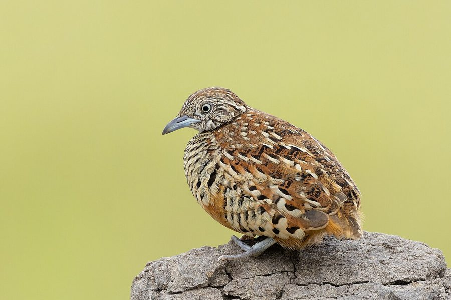

गुंडलूBarred Buttonquail
Turnix suscitator · Turnicidae · BRD-0260

- Scientific name वैज्ञानिक नाम
- Turnix suscitator (Vieillot, 1816)
- Family कुल
- Turnicidae
- Hindi हिंदी
- गुंडलू
- Local names स्थानीय नाम
- gundlu, barred buttonquail, button quail
- Status here यहाँ की स्थिति
- native
- Movement आवागमन
- Resident, here all year
- Known from कहाँ दर्ज
- Others have published records from the Basti–Ayodhya districts बस्ती–अयोध्या के ज़िलों से दूसरों के प्रकाशित अभिलेख
- IUCN IUCN
- LC
- Review समीक्षा
- audited and independently read
When to look कब देखें
Present all year. साल भर मौजूद।
Uses and possibilities उपयोग और संभावनाएँ
Drawn from the documented uses in the profile below, where each is labelled traditional, current or a research lead. All uses →
Tell it apart from इनसे अलग पहचानें
गुंडलू / Barred Buttonquail
Turnix suscitator (Vieillot, 1816) — Turnicidae
गुंडलू — यह एक छोटी, छिपी हुई चिड़िया है जो घास के मैदानों और खेतों में रहती है। इसे गुंडलू के नाम से जाना जाता है। यह चिड़िया अपनी आवाज़ से ज्यादा सुनी जाती है। इसकी आवाज़ "दु-दु-दु" सी होती है। साल भर यहाँ मिलती है पर गर्मियों में प्रजनन के समय सबसे ज्यादा सक्रिय होती है। जमीन पर दौड़ती है और उड़ना कम पसंद करती है।
Quick Identification त्वरित पहचान
| Feature | Description |
|---|---|
| Size | Tiny quail; 14–16 cm long |
| Overall | Compact, rounded body |
| Plumage | Rufous-brown or buffy with dark barring throughout |
| Upperparts | Rufous-brown with dark barring; crown darker |
| Underparts | Buff-white with dark barring on flanks and breast |
| Bill | Short, pointed; pale or dark |
| Eyes | Small, dark |
| Legs | Short, pale; lacks hind toe (diagnostic of buttonquails) |
| Tail | Very short or vestigial |
| Behaviour | Terrestrial; runs on ground; reluctant to fly |
| Vocalisations | Distinctive "doo-doo-doo" or similar calls |
Field tip: A tiny, barred quail running through grass and scrub. Most easily identified by its distinctive call (a resonant "doo-doo-doo" or whistled series) which echoes across grassland. Reluctant flier; prefers to run. Sexes reversed in role: females more colourful and territorial.
हिंदी — कैसे पहचानें:
बहुत छोटी घरेलू चिड़िया।
"दु-दु-दु" की आवाज़ सुनाई देती है।
घास के मैदानों में रहती है।
भागती है, उड़ना पसंद नहीं करती।
Morphology आकारिकी
Biometrics:
| Measurement | Range |
|---|---|
| Total length | 140–160 mm |
| Wing (flattened chord) | 75–85 mm |
| Tail | 25–35 mm |
| Bill | 13–16 mm |
| Tarsus | 18–22 mm |
| Weight | 28–52 g |
Size: 14–16 cm long; wingspan 28–32 cm. Weight 28–52 g. Females typically heavier than males.
Plumage: Rufous-brown or buffy overall with darker barring throughout. Crown darker brown. Back rufous-brown with darker scalloping and barring. Rump russet. Tail very short. Wings rufous-brown. Underparts buff-white to pale buff with dark barring on breast, flanks, and undertail coverts. Throat paler.
Sexual dimorphism: Females more richly coloured and more heavily barred than males. Females larger and more boldly marked.
Bill: Short, pointed; colour variable, pale or dark depending on subspecies and individual.
Legs: Short, pale or yellowish. Distinctive lack of hind toe (diagnostic of buttonquails).
Feet: Four-toed feet in front (no hind toe).
Eyes: Small, dark, alert.
Tail: Very short or nearly vestigial.
Vocalisations. Call repertoire:
- Main call: Distinctive resonant "doo-doo-doo" or "doo-doo" series, sometimes "pee-pee-pee". Very loud for size. Carries far.
- Alarm calls: Sharp calls when flushed.
- Other calls: Various grunts and chirps.
हिंदी: "दु-दु-दु" की जोर से आवाज़। बहुत दूर से सुनी जा सकती है। मादा नर की तुलना में अधिक शोर मचाती है।
Behaviour & Ecology व्यवहार और पारिस्थितिकता
Omnivore: Feeds on grass seeds, grain, insects, and small invertebrates.
Feeding behaviour: Forages on ground in grass and cultivated fields. Picks seeds and insects from ground and vegetation. Often seen scratching in soil or picking from grass.
Terrestrial: Almost entirely terrestrial. Prefers running to flying. Strong runners. Move mouse-like through grass.
Flight: Reluctant flier. Flushed birds fly weakly, short distances, then drop back into cover. Noisy flight.
Social behaviour: Solitary or in pairs. Territorial males are vocal, especially during breeding season. Polyandrous system: females territorial and mate with multiple males.
Role reversal: Unusual among quails — females are more colourful, larger, and territorial. Females call and display to attract males.
Breeding behaviour: Females court males. Nests built on ground by males or females. Males may incubate eggs and raise chicks.
हिंदी: भागता है, उड़ना कम करता है। अनाज और कीड़े खाता है। जमीन पर घोंसला बनाता है। मादा ने नर को आकर्षित करती है।
Life Cycle / Phenology जीवन चक्र
Year-round resident: Present throughout the year in suitable habitat. Breeding season March–August with peak activity May–July.
Breeding: Breeding season extends March–September in eastern UP, with peak March–August. Males build nests on ground.
Nesting: Nest a scrape on ground in grass or cultivated field. Lined with grass. Clutch 3–4 eggs.
Incubation and fledging: Males incubate and raise chicks. Period 12–14 days incubation; chicks fledge at 7–9 days.
Non-breeding season: Continue to occupy territories. Males less vocal in non-breeding season. Females may move to lower elevations in winter.
Moult: Partial or complete moult. Timing variable; often post-breeding.
Seasonal pattern: Most vocal March–August. Present year-round but populations may fluctuate with season.
हिंदी: साल भर मिलता है। गर्मियों में सबसे सक्रिय। जमीन में घोंसला बनाता है। अंडे देता है।
Host Plants or Prey आहार
| Food Type | Examples | Capture Method |
|---|---|---|
| Grass seeds | Various grass species, paspalum | Glean from ground and vegetation |
| Grain seeds | Rice, wheat, millet grains | Glean from fields and stubble |
| Small insects | Beetles, grasshoppers, crickets | Pick from ground |
| Invertebrates | Spiders, ants, small worms | Pick from ground and vegetation |
हिंदी: मुख्य रूप से अनाज के दाने खाता है। कीड़े भी खाता है। जमीन से चुनकर खाता है।
Predators / Natural Enemies शत्रु
- Avian predators: Common Kestrel, Merlin, crows, shrikes, larger raptors
- Mammalian predators: Fox, jackal, mongoose, domestic dog, cat
- Nest predators: Mongooses, snakes, jackals, foxes, crows
- Chick predators: Crows, snakes, large ants
हिंदी: शिकारी चिड़ियाँ इसका शिकार करती हैं। जानवर भी खतरनाक हैं। सांप अंडों को खाते हैं।
Agricultural / Human Relevance कृषि प्रासंगिकता
Protected status: All wild birds in India are protected under the Wildlife (Protection) Act 1972. Hunting is illegal.
Seed predator: Feeds on grass seeds and grain. May cause minor damage to crops but generally not a major pest.
Insect control: Feeds on insects and invertebrates, including pest species.
Grassland indicator: Presence indicates healthy grassland and scrub habitats. Indicator of habitat quality.
Cultural significance: Known locally as "gundlu" or similar names. Part of traditional grassland fauna.
Hunting pressure: Hunted historically in some regions, though currently protected.
हिंदी: यह पक्षी विधि अधिनियम 1972 के अंतर्गत संरक्षित है। इसका शिकार करना कानूनी रूप से निषिद्ध है। घास के मैदानों के स्वास्थ्य का संकेतक है।
Expected Locally स्थानीय रूप से अपेक्षित
Not a field record. Written from published accounts for eastern Uttar Pradesh. No confirmed local sighting yet — if you have seen it, that is what the atlas needs.
अभी तक स्थानीय पुष्टि नहीं। यह विवरण प्रकाशित स्रोतों से है, किसी अवलोकन से नहीं।
Barred Buttonquail is a year-round resident throughout eastern Uttar Pradesh, occurring in grasslands, scrub habitats, and cultivated fields. GBIF holds published records from these districts. The species is most easily detected during breeding season (March–August) when males are highly vocal, calling from dawn. The distinctive resonant "doo-doo-doo" call is the primary means of detection. Most active at dawn and dusk. A first record would require a dated photograph with GPS coordinates and date, submitted through the About page; alternatively, a recording of the distinctive call would constitute strong evidence.
Distribution वितरण
Global range: Indian subcontinent and Southeast Asia. Occurs from Bangladesh through India to Malaysia and Indonesia.
In India: Distributed throughout India in suitable grassland and scrub habitat. Resident and partially migratory.
In Uttar Pradesh: Distributed throughout the state in grasslands, scrub, and cultivated areas. Resident throughout.
In Basti district / eastern UP: Year-round resident in suitable grassland and cultivated habitats. Expected throughout the year with populations perhaps highest during breeding season.
Research Questions शोध प्रश्न
- What is the population density of Barred Buttonquails in different grassland and cultivated habitats of eastern UP?
- How does the calling frequency and activity of Barred Buttonquails vary through the breeding season and throughout the year?
- क्या घास के मैदानों की कटाई और कृषि पद्धति में बदलाव से इस चिड़िया की संख्या में कमी आ रही है?
- What is the diet composition of Barred Buttonquails in different seasons and habitat types?
- How accurate is the distinctive call as a census tool for monitoring Barred Buttonquail populations in grasslands and fields? (A child can record and count calls at dawn.)
- What is the reproductive success of Barred Buttonquails in different habitat types and cultivation patterns?
Similar Species मिलती-जुलती प्रजातियाँ
| Species | Key Difference | Hindi | Field Rule | |
|---|---|---|---|---|
| Small Buttonquail (Turnix sylvaticus) | Very similar and overlapping; smaller; different call; rarer | छोटी बटनक्वेल | Small Buttonquail is smaller and has different call. Very difficult to distinguish in field. | |
| [[common_quail\ | Common Quail]] (Coturnix coturnix) | Much larger (18–20 cm); male has distinct facial pattern; completely different call | कबूतर क्वेल | Common Quail is noticeably larger and has bold facial pattern on male. Different habitat preference. |
Field rule: A tiny, barred quail giving a distinctive resonant "doo-doo-doo" call from grasslands and cultivated fields is Barred Buttonquail. The call and small size are diagnostic.
Taxonomy & Classification वर्गीकरण
Original description. Described by Vieillot in 1816. Type locality: India.
Subspecies. T. s. suscitator (Vieillot, 1816) — Indian populations. Some subspecific variation across range.
Family and order placement. Order Charadriiformes; family Turnicidae (buttonquails). Buttonquails are unique among quails in showing reversed sexual roles and lacking a hind toe.
Phylogenetic notes. Turnix suscitator is closely related to other Turnix species. Buttonquails form a distinct lineage within Charadriiformes.
IUCN status rationale. Assessed as Least Concern (LC) globally. Populations are stable and adaptable to various habitats. Reasonably tolerant of habitat modification.
हिंदी: यह विश्वभर में कई स्थानों पर पाया जाता है। भारत में साल भर रहता है। कानून से पूरी तरह सुरक्षित है।
Photo Gallery फोटो गैलरी
No photos yet — add field photos to media/species/barred_buttonquail/ and run node scripts/sync_photos.js.
Wanted photos:
- Individual showing rufous-brown and barred plumage
- Close-up of head showing bill and eye
- Individual calling or singing
- Running through grass or cultivated field
- Pair if possible
- Nest on ground with eggs or chicks (breeding season)
References संदर्भ
- Vieillot, L. P. (1816). [Original description]. Analyse d'une Nouvelle Ornithologie Élémentaire. [details from GBIF]
- Ali, S. & Ripley, S.D. (1987). Handbook of the Birds of India and Pakistan. Vol. 2. Oxford University Press, New Delhi. Pp. 156–158.
- Grimmett, R., Inskipp, C. & Inskipp, T. (2011). Birds of the Indian Subcontinent. 2nd ed. Christopher Helm, London. Pp. 118–119.
- Cramp, S. & Simmons, K. E. L. (1977). Handbook of the Birds of Europe, the Middle East and North Africa. Vol. 2. Oxford University Press.
- GBIF Occurrence Data — Turnix suscitator, India.
- BirdLife International (2023). Turnix suscitator. IUCN Red List of Threatened Species. IUCN, Cambridge.
Source file: species/fauna/birds/barred_buttonquail.md